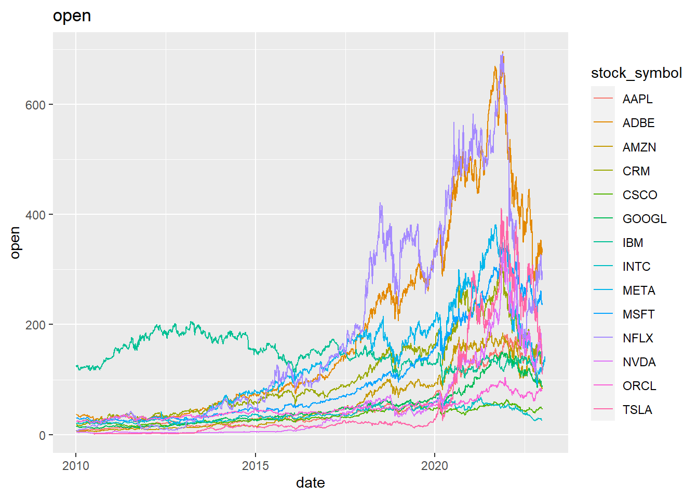
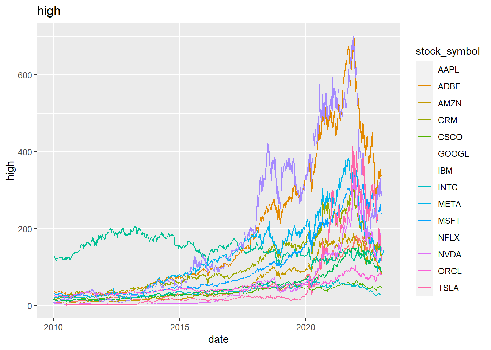

2. Under “Datasets” go to the most recent week (pick the one that posted the Tuesday just before this week’s Tuesday class). This means that if you’re doing the work close to the due date, you may be using the second-most-recent data posted. Click on the link in the “Data” column (the first link in the row)
3. Read the README about the data. Note the code for downloading the data directly or using the tidytuesdayR package. Note there’s also a “cleaning script” available, but usually this is code they’ve *already applied* to the data and you don’t need to worry about it.
4. Look at the data (and probably do some preliminary calculations and graphs) and think of a story that you can tell with the data.
5. Write down, in a single sentence, the story you are trying to get across.
6. You will be using R and ggplot2 to make a graph to tell that story. While you won’t be turning your sketch in, draw, by hand, a sketch of what you want your visualization to look like. Just give a sense of the layout, what kind of graph you want it to be, and what you want included. You don’t need to include all the details or accurately graph the data. You can do this on paper or with MS Paint, draw.io, etc.
7. Use ggplot to make that graph (it’s okay if your plans change between sketch and ggplot) and include everything in an RMarkdown doc.
Preparation
This week’s Tidy Tuesday data consists of daily stock prices and volume of 14 different tech companies. All stock_symbols have 3271 prices, except META (2688) and TSLA (3148) because they were not publicly traded for part of the period examined.
Loading required package: kableExtra
Attaching package: 'kableExtra'
The following object is masked from 'package:dplyr':
group_rows
library(lubridate)
Loading required package: timechange
Attaching package: 'lubridate'
The following objects are masked from 'package:base':
date, intersect, setdiff, union
library(scales)
Attaching package: 'scales'
The following object is masked from 'package:purrr':
discard
The following object is masked from 'package:readr':
col_factor
Rows: 45088 Columns: 8
── Column specification ────────────────────────────────────────────────────────
Delimiter: ","
chr (1): stock_symbol
dbl (6): open, high, low, close, adj_close, volume
date (1): date
ℹ Use `spec()` to retrieve the full column specification for this data.
ℹ Specify the column types or set `show_col_types = FALSE` to quiet this message.
Rows: 14 Columns: 2
── Column specification ────────────────────────────────────────────────────────
Delimiter: ","
chr (2): stock_symbol, company
ℹ Use `spec()` to retrieve the full column specification for this data.
ℹ Specify the column types or set `show_col_types = FALSE` to quiet this message.
The big_tech_companies table is for tying the stock symbol to the name, so I’m going to focus on the big_tech_stock_prices table. Dates are from April 1st 2010 to January 24th 2023. Variables are the opening price, highest price, lowest price, closing price, adjusted closing price, and number of stocks.
I’m not super knowledgeable about stocks. Why is there an adjusted closing price?
Per Corporate Finance Institute’s Adjusted Closing Price, an adjusted closing price is a calculation made to the closing price that accounts for any additional factors, such as stock splits and dividend payouts, and provides a more accurate value.
Stock prices range from $0.99 to $700.99. Stock volumes range from 589,200 to 1,880,998,000. There are 45,088 observations. No missing values, but as mentioned prior, not all companies have stock prices for all the dates because they were not public at the time. The average stock prices are in the high eighties with a standard deviation of around 100 for all, so likely skew or outliers present. The average number of stocks per company is 52,978,130 with a standard deviation of 93,247,295, which also means skew, outliers present too. Most stock prices range between ~$25 to ~$130, and number of stocks are usually between 9,629,425 and 58,397,675.
Warning: `aes_string()` was deprecated in ggplot2 3.0.0.
ℹ Please use tidy evaluation ideoms with `aes()`
`stat_bin()` using `bins = 30`. Pick better value with `binwidth`.
`stat_bin()` using `bins = 30`. Pick better value with `binwidth`.
`stat_bin()` using `bins = 30`. Pick better value with `binwidth`.
`stat_bin()` using `bins = 30`. Pick better value with `binwidth`.
`stat_bin()` using `bins = 30`. Pick better value with `binwidth`.
`stat_bin()` using `bins = 30`. Pick better value with `binwidth`.
Confirmed all variables are heavily right skewed. Stock volume seems to have outliers (unable to even see highest value, tail seems to end a little above 500,000,000).
# Multivariate graphical - changes across companiesfor (variable in target_variables) {print(ggplot(big_tech_stock_prices,aes(x = date, y = .data[[variable]], color = stock_symbol)) +geom_line() +labs(title = variable))}


Hard to see with so many different companies. Overall price types (open, high, low, close, adj_close) seem to be the same per company. Google has been pretty steady, highest stock price over time with slight decrease. Most companies started much lower and then took off, except for Google.. Netflix and Adobe reached the highest stock prices, and thus had the highest falls. Highest stocks (except for Google) seem to be between 2018 and 2022. There were more fluctuations in stock volume than I expected. Hard to tell with so many companies, but seems like volumes for Adobe has decreased over entire time span and Oracle or Tesla slightly increased around 2020.
# Pivot to view price types on a single graph and save graphs to zoom in view.tech_by_price_type <- big_tech_stock_prices %>%pivot_longer(cols =c("open", "high", "low", "close", "adj_close"),names_to ="price_type", values_to ="price")p_fixed <-ggplot(tech_by_price_type, aes(x = date, y = price, color = price_type)) +geom_line() +facet_wrap(~stock_symbol)p_fixed
p_free <-ggplot(tech_by_price_type, aes(x = date, y = price, color = price_type)) +geom_line() +facet_wrap(~stock_symbol,scales ="free")p_free
With a fixed scale, IBM is the only company with a big difference between adjusted close (lower) and other stock prices and has a peak 2013. All others seem to have a peak after 2020, but Oracle, Cisco, Google, and Intel do not have large changes.
With a free scale, it is more apparent that all companies except for IBM increased towards 2020 and then dropped after 2022. Cisco, IBM, Intel, and Oracle have visually noticeable differences between adjusted closing price and other prices.
In hindsight, I think instead of Google stock earlier, it was IBM and the colors are just too close to differentiate.
To better understand the changes going on and make comparable, I think it makes sense to calculate the percentage point change. To account for stock splits, etc, I’m going to use the adjusting closing price.
Warning in diff(adj_close)/lag(adj_close): longer object length is not a
multiple of shorter object length
Warning in diff(adj_close)/lag(adj_close): longer object length is not a
multiple of shorter object length
Warning in diff(adj_close)/lag(adj_close): longer object length is not a
multiple of shorter object length
Warning in diff(adj_close)/lag(adj_close): longer object length is not a
multiple of shorter object length
Warning in diff(adj_close)/lag(adj_close): longer object length is not a
multiple of shorter object length
Warning in diff(adj_close)/lag(adj_close): longer object length is not a
multiple of shorter object length
Warning in diff(adj_close)/lag(adj_close): longer object length is not a
multiple of shorter object length
Warning in diff(adj_close)/lag(adj_close): longer object length is not a
multiple of shorter object length
Warning in diff(adj_close)/lag(adj_close): longer object length is not a
multiple of shorter object length
Warning in diff(adj_close)/lag(adj_close): longer object length is not a
multiple of shorter object length
Warning in diff(adj_close)/lag(adj_close): longer object length is not a
multiple of shorter object length
Warning in diff(adj_close)/lag(adj_close): longer object length is not a
multiple of shorter object length
Warning in diff(adj_close)/lag(adj_close): longer object length is not a
multiple of shorter object length
Warning in diff(adj_close)/lag(adj_close): longer object length is not a
multiple of shorter object length
ggplot(tech_percent_change,aes(x = date, y = percent_change)) +geom_line() +facet_wrap(~stock_symbol)
I think daily percent change is a little noisy. It looks like Tesla has the most variation.
There’s a lot to explore here. Going back to a story, it looks like there is a big difference between IBM’s stock behavior and the other tech companies. Looking at the average change in adjusted closing price to see if there is more of a story present.
# Explore IBM dataibm_adj_close <- big_tech_stock_prices %>%select(stock_symbol, date, adj_close) %>%group_by(date) %>%mutate(avg_price =median(adj_close)) %>%filter(stock_symbol =="IBM")ibm_adj_close %>%ggplot() +geom_line(aes(x = date, y = adj_close)) +geom_line(aes(x = date, y = avg_price), color ="gray")
Okay, I definitely think there is an interesting story here. I don’t know why IBM is different from the other tech companies. My story is: IBM stock behavior is different from the average tech company stock behavior. Following is my hand-drawn sketch.
I think a line graph makes sense. Date on the x-axis and Adjusted Closing Price on the y-axis. I want to play around with the scales and aggregation to see if daily or monthly, and what amount increments make sense. I think it is important to call out when COVID-19 hit the United States and possibly the maximum for IBM. I looked the decline and found this article, IBM's sales slump turns stock into Dow's lone loser of 2013, that seems to indicate the decline is due to lower sales with technology hardware. It might be important to point out where IBM’s decline started. I also want to use color and/or linetype to differentiate average vs. IBM.
ibm_adj_close %>%# mutate(year_month = floor_date(date, "month")) %>%# group_by(year_month) %>% # summarize(ibm_price = mean(adj_close), avg_price = mean(avg_price)) %>%ggplot() +geom_line(aes(x = date, y = adj_close), color ="#0f62fe") +geom_line(aes(x = date, y = avg_price), color ="#4C4E52") +theme_classic() +theme(axis.ticks.x =element_line(colour ="black") ) +labs(title ="IBM Stock Behavior Differs From Other Tech Companies",subtitle ="Average Tech Company Stock is the Median of Top 14") +xlab(label ="Year") +ylab(label ="Adjusted Closing Price") +# scale_x_date(date_labels = "%Y", date_breaks = "years")scale_x_date(minor_breaks ="years",breaks =as.Date(c("2010-01-01", "2015-01-01", "2020-01-01")),guide ="axis_minor",date_labels ="%Y",limits =as.Date(c("2010-01-01", "2023-02-01")) ) +theme(ggh4x.axis.ticks.length.minor =rel(1),plot.subtitle =element_text(color ="#4C4E52")) +scale_y_continuous(labels=scales::dollar_format()) +geom_vline(xintercept =as.Date("2020-03-01"), linetype ="dotted") +geom_text(aes(as.Date("2020-03-01"), 200, label ="Covid-19", hjust =1.1),color ="black", size =3) +geom_text(aes(as.Date("2010-01-01"), 95,label ="IBM", hjust =-0.05),color ="#0f62fe", size =3) +geom_text(aes(as.Date("2010-01-01"), 30,label ="Tech Company Average", hjust =-0.001), color ="#4C4E52", size =3)